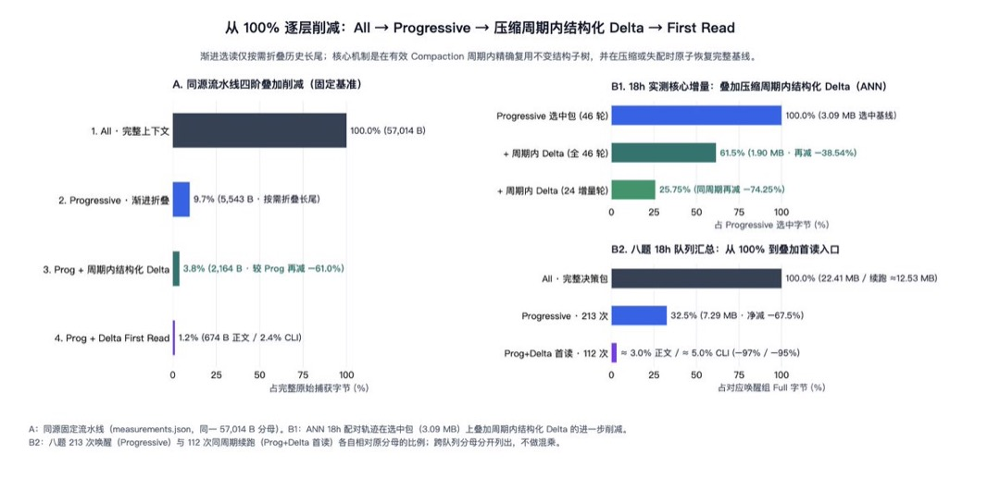
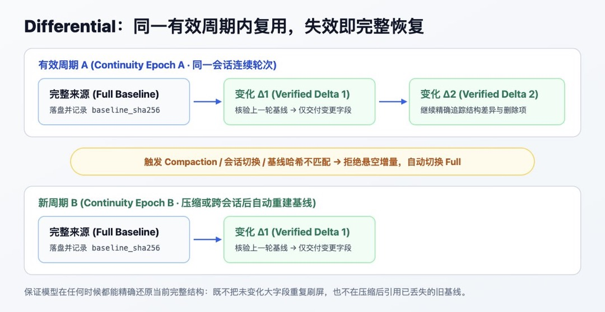
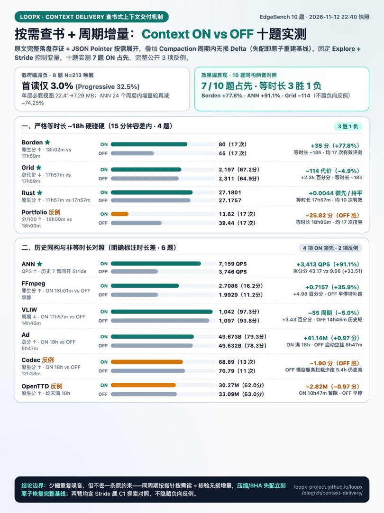
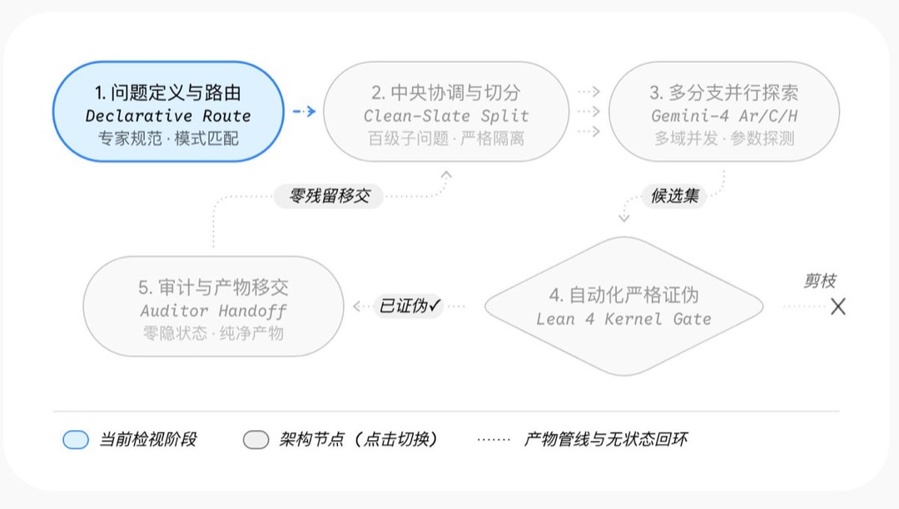
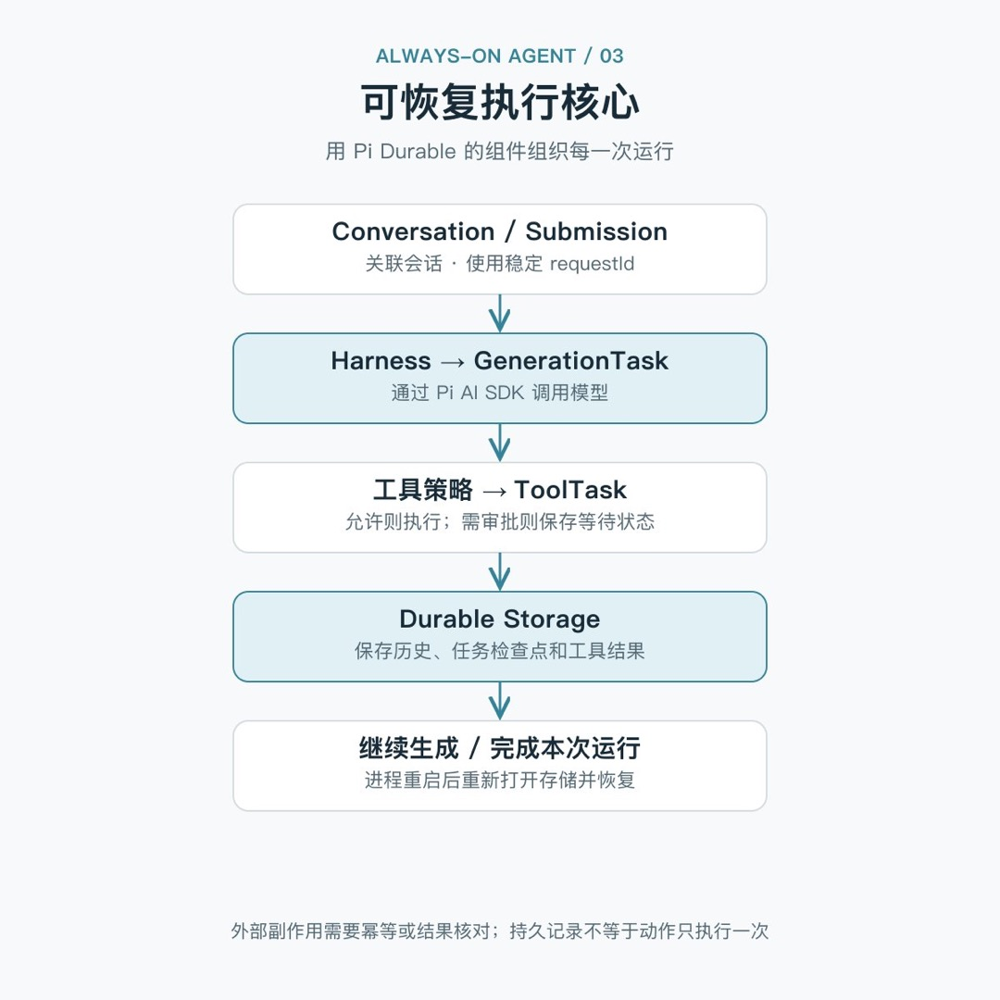
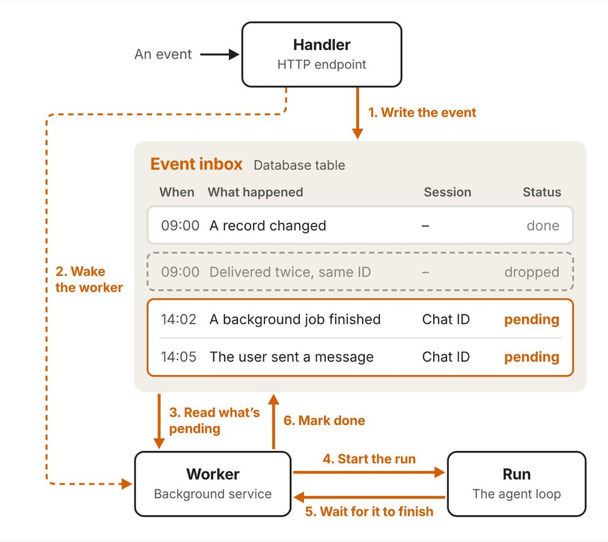
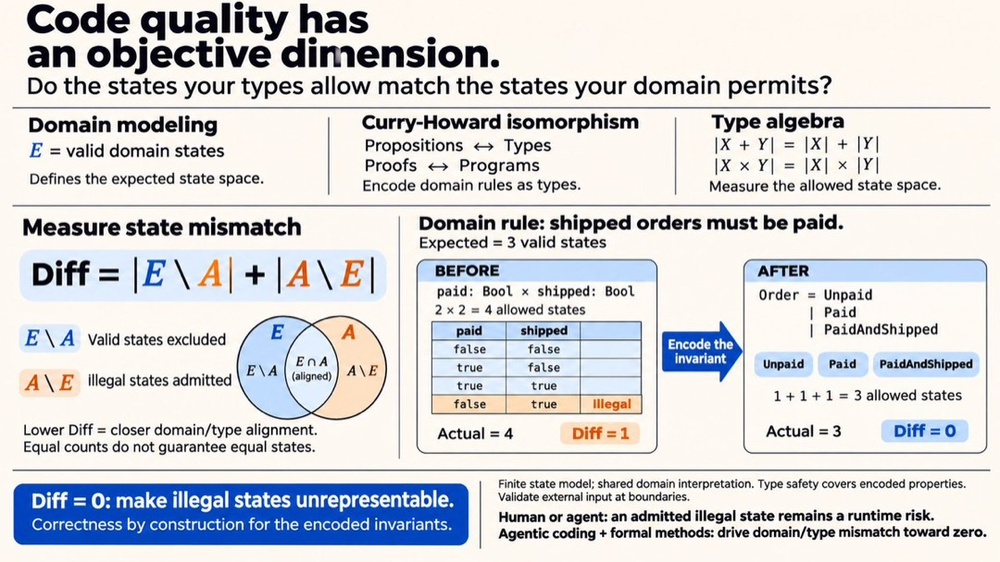

本期速览
01 magpie 改走 agy CLI 规避封号风险
03 Grok Build 向所有套餐开放
04 LoopX 分层压缩长程 Agent 上下文
05 Grok 团队 AI Coding 工程化实践
06 Gemini-4 以 Lean 4 证 13 年猜想
08 Pi Durable 搭建常驻 Agent
01｜magpie 改走 agy CLI 规避封号风险
来源（X） · @magpie_router · 2026-11-16 02:19
原因：它们模拟客户端直连 Google 的接口，账号容易被封。现在 magpie 不再用这种方式向 Google 发任何请求。
想继续用 Antigravity，请改装社区插件「Antigravity (local agy CLI)」：通过 ACP 驱动你本机登录好的 agy CLI，请求由官方客户端自己发出。风险更低，但不是零，别多号同时高频跑。
安装：Plugins 页搜 agy，或
magpie plugin add @magpie-community/opencode-agy-cli-auth
02｜Magpie 反代 GLM 触发账号封禁
来源（X） · @zg0820 · 2026-11-15 23:16
Magpie反代调用GLM-5.3-Flash直接触发风控封号
圈内已出现批量踩坑案例：通过Magpie反代调用智谱GLM-5.3-Flash时，接口直接返回405错误，错误码3012，官方判定原因为“异常行为导致请求被拦截” 该封禁为账号级风控，命中后ZCode官方App内同步失效，不会自动解除，唯一解封渠道只有联系官方客服申诉
特别提醒：别拿自己的付费订阅账号赌风控，GLM风控下手极狠，反代调用基本一封一个准，号封了订阅直接打水漂
03｜Grok Build 向所有套餐开放
来源（X） · @grok · 2026-09-25 20:04
中文译文
给 Grok 一个想法，它就会在你的聊天中实时构建出一个可运行的版本。
Grok Build 现已在所有套餐中可用——支持网页、iOS 和 Android。
原文
Tell Grok an idea, and it builds a working version live in your chat.
Grok Build is now available on every plan - on web, iOS, and Android.
04｜LoopX 分层压缩长程 Agent 上下文
来源（X） · @huangruiteng · 2026-11-15 21:49
我们在 LoopX 里做了一套确定性的 Context Delivery 机制，在不删改一条原约束的前提下，分三步逐层减负（从 100% 完整包起算）：
1. 按需选读（Progressive）→ 先压到 32.5%
完整控制包落盘存证并锁死 SHA-256，默认只展开当前决策必需的视图，需要细节再按指针回读原文（八题 213 次唤醒 22.41 → 7.29 MB，先砍掉 67.5% 无关长尾）。
2. 周期内无损差分（Epoch Delta）→ 再压到原包 ~20% 量级
只要还在同一个未压缩的上下文周期内，续跑只传相对上一轮的结构增删改：在按需包基础上，全周期 46 轮平均再砍 38.5%（3.09 → 1.90 MB），其中 24 个纯增量轮再砍 74.3%（压进原包 10% 以内）。一旦宿主发生上下文压缩（Compaction）、重启或基线哈希失配，立刻原子切回完整包重建，绝不悬空叠加旧差分。
3. 首屏目录入口（--initial-read）→ 首读正文压至 3.0%
续跑首屏先读变更目录与指针索引（含 CLI 封装 5.0%）；算上后续按指针补读，ANN 18h 整场未缓存输入 Token 净省 12.1%。
固定同一套 Explore + Stride 在 EdgeBench 十题只切 Context ON vs OFF，10 题里 7 题占先：等时长 ~18h 下 Borden 45 → 80（+77.8%）、Grid 代价 2,311 → 2,197（−114）、Rust 微先；历史同构下 ANN 3,746 → 7,159 QPS（+91.1%）、FFmpeg +35.9%、VLIW −55 周期；同时原样公开 Portfolio / Codec / OpenTTD 3 个 OFF 占优的反例。
不靠全量硬塞，也不靠摘要碰运气，靠确定性合同守住长程信噪比。完整设计与十题数据见评论区：



05｜Grok 团队 AI Coding 工程化实践
来源（X） · @JangXiin · 2026-11-15 13:57
1. 代码库即记忆：9 月留一个 setTimeout 补丁，10 月 AI 能给你复制出 183 处
2. 规则大于提示词：禁用易错 API，砍掉 98% 注释，人工纠错全沉淀为静态检查
3. 自产自验：配 CLI + DevTools 让 Agent 自己调试，复杂逻辑上 TLA+ / Lean / Fuzzing
4. 先内后外：内层质量闭环后，再让 Grok Bot 无人审查自动合并
这套打法的结果就是单月 1.1 万 PR，冷启动提速 38%
引用内容
lauren @poteto
中文译文
我的 AIE 演讲已经上线了！来听听 grok @bot 团队是如何在不牺牲质量的情况下快速交付的
https://youtu.be/O_zcc6Xl12g
原文
my AIE talk is up! come hear how the grok @bot team ships so quickly without compromise on quality
https://youtu.be/O_zcc6Xl12g
06｜Gemini-4 以 Lean 4 证 13 年猜想
来源（X） · @mylifcc · 2026-11-15 12:01
Google 刚刚用 Gemini-4 搞出了 5000 万行 零人工干预的 Lean 4 代码，彻底证完了悬而未决 13 年的 Courtade–Kumar 猜想。
但最讽刺的是：它的核心秘诀不是把上下文塞满，而是彻底拆碎 Context 🧵👇

07｜DeepSeek 称华为可对标 GB300
来源（X） · @hhp121222 · 2026-11-15 22:18
首先，梁表示DeepSeek在V3时期就停止依赖英伟达的软件栈，开发了自己的高级编译器（TileLang），并补充道：“只要我们在华为显卡上重复这个过程，任务就完成了，在这方面，我认为英伟达是在自掘坟墓。”
然后他给出了华为新款950 Supernode与英伟达GB200和GB300的硬件比例：“GB300能做的事，华为的超级节点也能做到，延迟是一样的，唯一的代价是四张华为显卡替换了一张英伟达显卡。”
08｜Pi Durable 搭建常驻 Agent
来源（X） · @verysmallwoods · 2026-11-16 00:45
Agent 平时等待，收到消息、Webhook 或定时事件后唤醒，推进任务、保存进度，再决定何时继续，以及是否通知用户。
各个组件可以这样组合：
- Conversation 保存讨论，Submission 接收输入，用稳定 requestId 关联重复请求。
- Harness 调度 GenerationTask 和 ToolTask，完成模型生成、工具调用与后续执行。
- Durable Storage 保存历史、检查点和结果，进程重启后重新打开存储并恢复。
- Pi AI SDK 统一接入模型服务。
应用层负责事件收件箱、长期任务、记忆、审批和通知；定时唤醒可结合持久任务实现，周期规则由应用管理。外部操作还需要幂等或结果核对。
配图分三层：全局架构、主动调度循环、可恢复执行核心。
或许我会尝试在 ChatOllama 中实现一下。



引用内容
九原客 @9hills
之前在 raft build 上就看到类似的设计。
https://claude.com/resources/articles/building-always-on-agents


09｜Domain 与类型状态差定义代码质量
来源（X） · @guyingjie129 · 2026-11-15 20:33
Domain Modeling + Curry-Howard Isomorhpism + Type Algebra 三者共同给出了一组代码质量的客观标准。
Domain Modeling 给出了 Expected 的 State 基数；
Type Definitions in Codebase 给出了 Actual 允许的 State 基数；
Curry-Howard Isomorphism 给出了将 Domain Rules 映射到 Type Definitions 的对应关系。
代码质量的客观量化标准是：
Diff = Expected - Actual。
Diff 越小，代码质量越高，反之越低。
当 Diff = 0 时，我们说 Type 跟 Domain 充分对齐了，我们 Make Illegal State Unrepresentable 了，我们 Correctness By Construction 了，我们 Well-typed Program can't go wrong 了。
上述代码质量标准的客观性体现在 Agentic Coding 时一样有效，当 Illegal State 未被类型所拒绝，泄漏到了 Runtime，神仙来了也得在 Runtime 防御一下。
不管是人还是 Coding Agent，谁漏谁出 bug。
近期 Agentic Coding 的形式化浪潮，本质上就是直接的方式、或间接但同构的方式，让 Diff(Type/State, Domain) 趋于 0。

引用内容
Brian Cardarella @bcardarella
中文译文
很多开发者不会想听这话：代码质量是一个主观指标。
我们构建了工具、实施了流程、写了书、做了演讲……所有这些都是为了衡量我们的主观指标，徒劳地试图将代码质量重新归类为客观指标，但它不是。
唯一重要的是产出。
你交付了什么？
它是否按照预期工作？
它性能如何？
它是否稳定？
代码质量唯一能改善的是对代码库的人为干预，而且只有当你擅长该特定代码库内部的模式时，这一点才成立。
原文
A lot of devs won't want to hear this: code quality is a subjective metric.
We have built tools, implemented processes, written books, given presentations... all to meausure our subjective metrics in a vain attempt to reclassify code quality as an objective metric, but it isn't.
All that matters is output.
What are you delivering?
Does it do what it is intended to do?
Is it performant?
Is it stable?
The only thing that code quality improves is human intervention in a code base and that is only true if you are adept at the patterns a particular codebase has within.